ychenzgithub
Earth Science
Interactive El Niño outlooks for Southern California rain and sea level, plus open-source toolkits for satellite fire emissions and wildfire spread benchmarks.
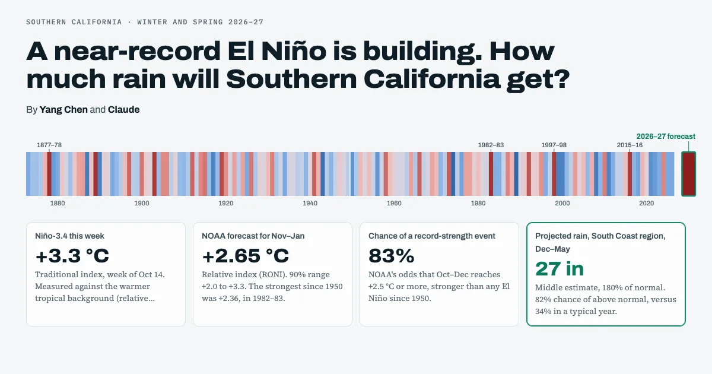
SoCal El Niño Rain Outlook (2026–27)
How the very strong 2026–27 El Niño could shape winter and spring rain in Southern California, from 130 years of NOAA records and NOAA's October 2026 El Niño forecast.
- Gamma regression on the Relative Oceanic Niño Index
- Adjustable forecast strength and uncertainty
- Skill checked with leave-one-out cross-validation
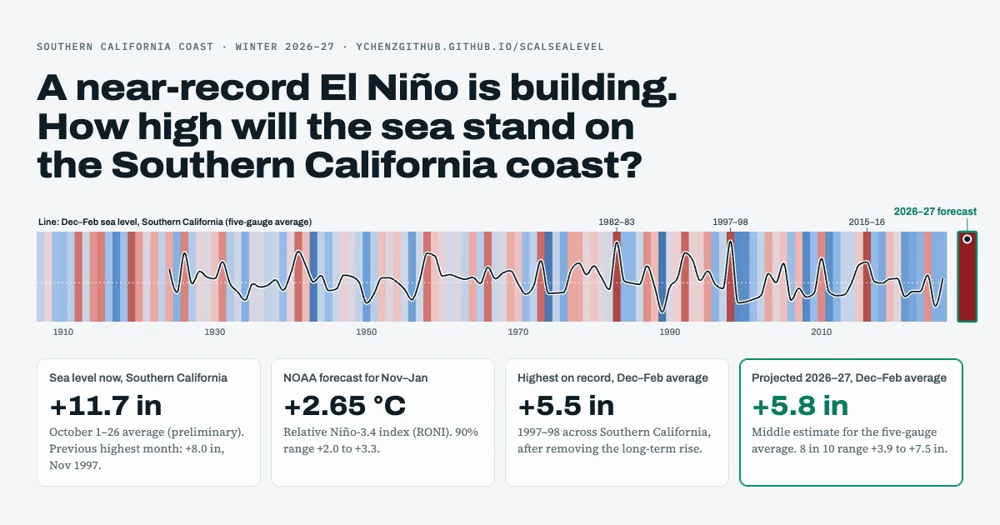
SoCal El Niño Sea Level Outlook (2026–27)
How the 2026–27 El Niño could raise sea level and winter high water on the Southern California coast, from every tide-gauge record since 1906, satellite altimetry and NOAA's forecast.
- Gauges from San Diego to Santa Barbara and Ensenada
- Projections for winter averages and highest water
- King tides for winter 2026–27
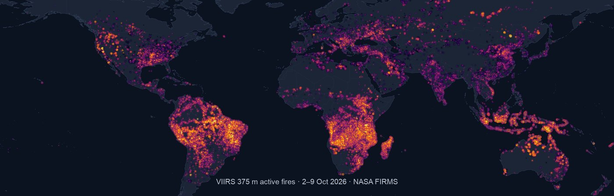
GFED5NRT · Global Near Real-Time Fire Emissions
Combines VIIRS 375m satellite active fire detections with GFED5 region- and vegetation-specific effective fire area (EFA) and fuel consumption (FC) scalars to automatically generate near real-time global burned area and chemical species emissions on a 0.25° grid.
- Automated daily retrieval of Suomi-NPP / NOAA-20 active fire detections
- Rigorous multi-species emission factor (EF) matrix conversion
- End-to-end cloud sync and global spatiotemporal mapping
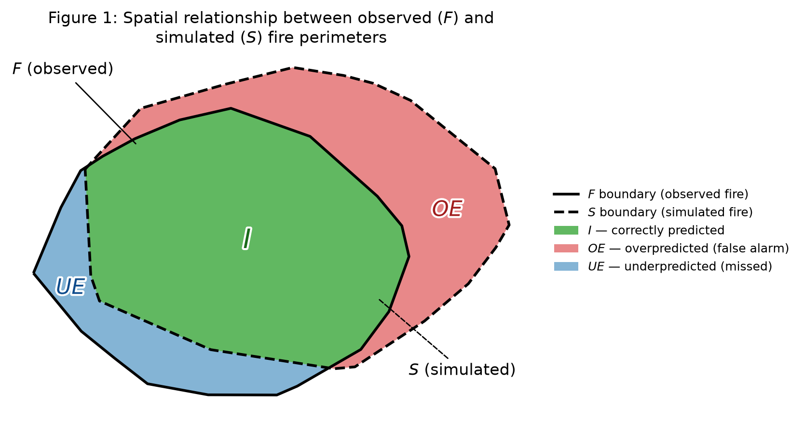
FireSpreadIndices · Spread Simulation Benchmark
A Python benchmark library for evaluating the spatial agreement between simulated wildfire spread and observed fire perimeters. Includes overall agreement metrics (IoU, Dice, SDI, ADI, SSIM) and over-/under-prediction decomposition.
- Supports both vector polygons and binary/continuous raster grids
- Complete spatial metrics for fire spread shape and area deviation
- Reproducible Jupyter test workflows and visualizations
Knowledge & Life
Interactive web apps for learning and everyday life: deep-zoom historical maps, GeoGuessr meta, food discovery, cipher training, Rubik's Cube tutorials, tree and wildflower ID, classical music, the Ig Nobel Prize chronicle, a global bird sticker gallery, and spelling bee practice.
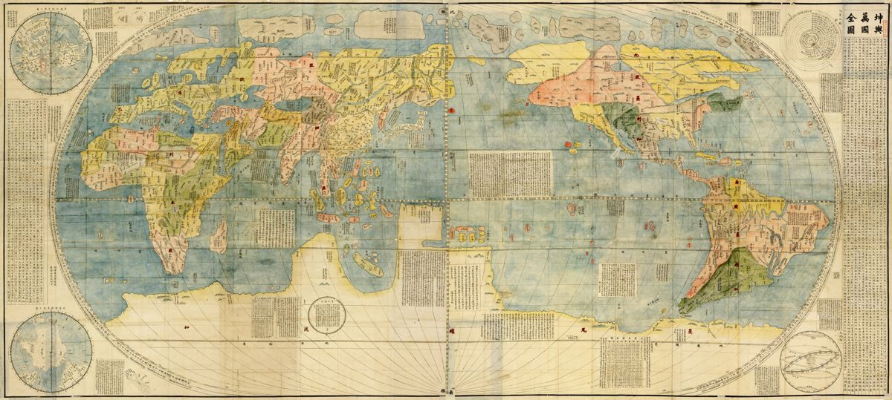
Historical Map Appreciation Platform
An ultra-high-resolution deep-zoom platform for exploring historical maps. Zoom into millimeter-level pyramid tiles of Matteo Ricci's Kunyu Wanguo Quantu (1602) and Martino Martini's Novus Atlas Sinensis (1655), with historical layer annotations for an immersive viewing experience.
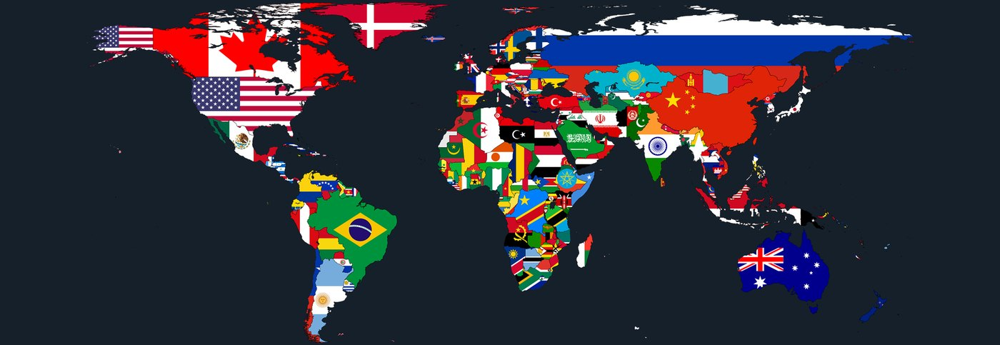
GeoGuessr Knowledge Hub & Quick Reference
A global GeoGuessr meta identification guide and review system distilled from real game notes. Covers Street View camera generations, utility poles, bollards, car and antenna meta, and a detailed interactive atlas of countries and regions to help competitive players pinpoint locations fast.
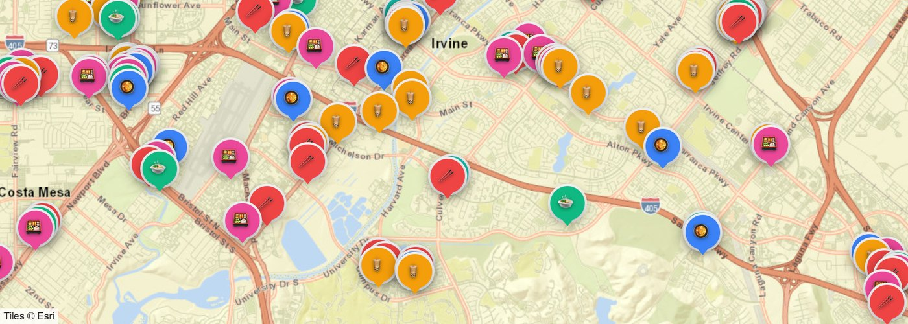
Irvine & Orange County Asian Food Map
An interactive map of 400+ Asian restaurants, boba and dessert shops, and supermarkets across Irvine and nearby Orange County cities (Tustin, Costa Mesa, and more), with category filters and spatial search.
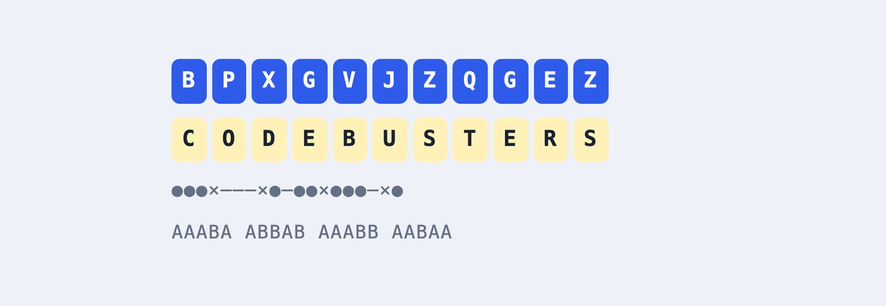
Codebusters Cryptography Training Center
A training platform for Science Olympiad Codebusters (Division B, 2026–27), with tutorials for all 13 cipher types, unlimited practice generators, timed speed drills, and mock tests.
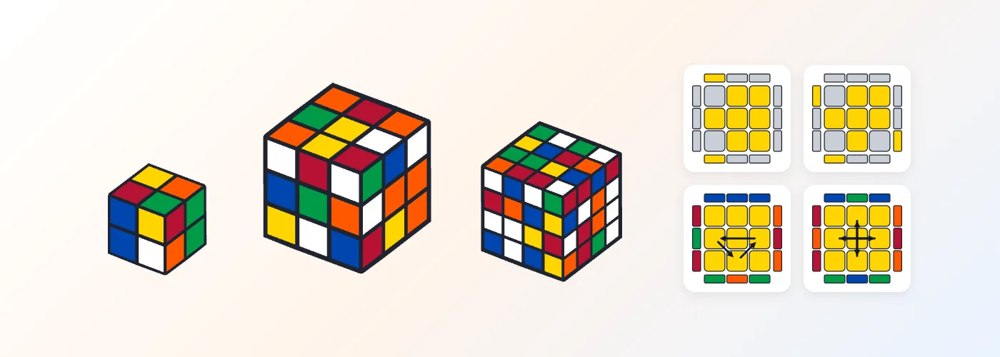
Rubik's Cube Guide: Beginner to CFOP
A bilingual Rubik's Cube tutorial: notation, the layer-by-layer beginner method, CFOP (F2L, OLL, PLL), the 2×2, and 4×4 reduction with parity. Every case diagram is generated from its algorithm, and every algorithm plays on a 3D cube.
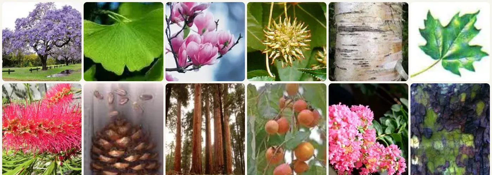
Tree ID: Photo Guide to Identifying Trees
Learn trees by whole tree, leaf, flower, fruit and bark: a photo atlas of 92 common trees, SciOly Forest Finds species with identification keys and look-alikes, botany basics, conifer classification, and city tree maps.
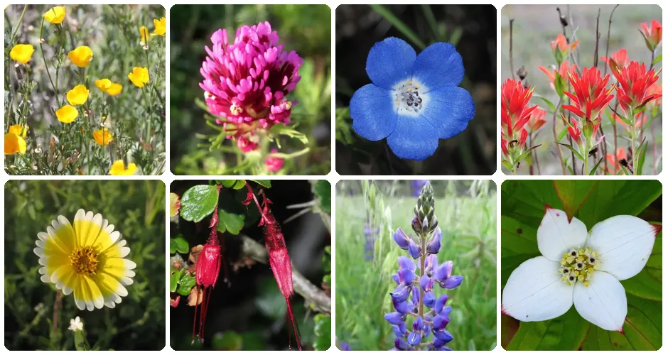
Wildflower ID: Photo Guide to Wildflowers
65 wildflowers of California, gardens and the Canadian Rockies with photos, ID features and bloom calendars from iNaturalist records, plus look-alike pairs, flower anatomy, where to see wildflowers and a quiz.
Classical Music Collection: 55 Masterworks
Curated collection of 55 timeless classical masterworks spanning Baroque, Classical, Romantic, Impressionist, and Modern eras, with embedded playback and program notes.
The Ig Nobel Prize Chronicle (1991–2026)
All 36 ceremonies and 357 Ig Nobel Prizes, compiled from official records and the original papers, with a narrative essay and an original cartoon for every year.
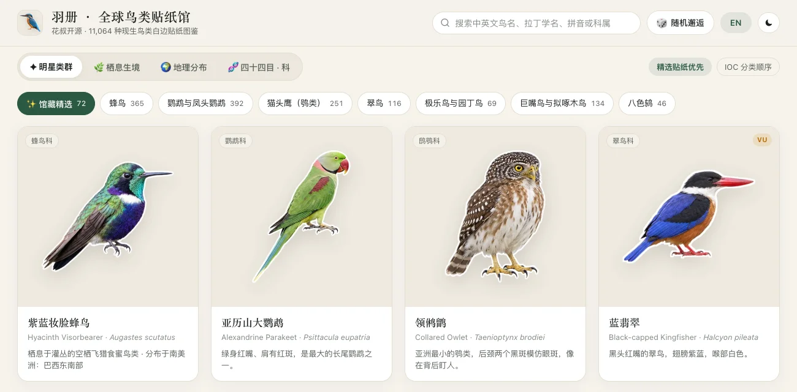
Avian Folio: Global Bird Stickers
An image-first gallery of all 11,064 living bird species, browsable by featured groups, habitats, world regions and the 44 orders and 250 families.
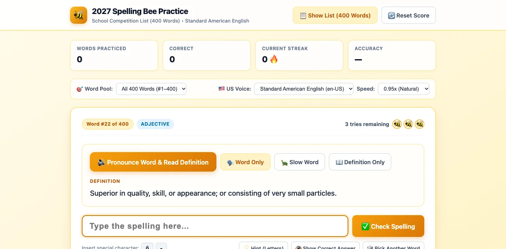
2027 Spelling Bee Practice (400 Words)
Practice the 400-word 2027 school competition list with American English pronunciation, definitions read aloud, three tries per word with hints, and a searchable word list.